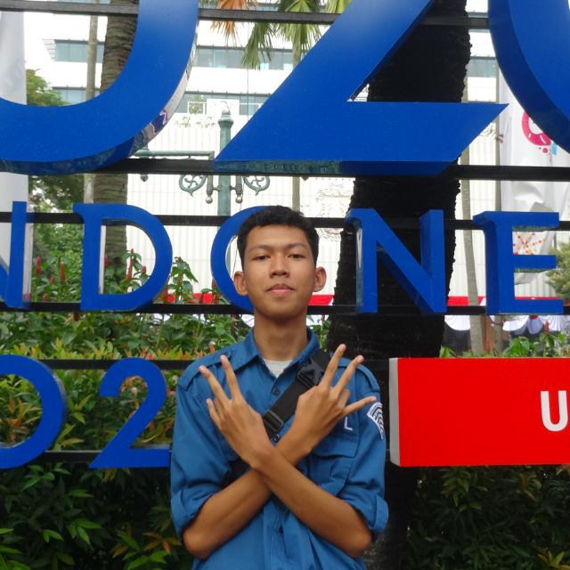

RPL2
BIO DATA

DIAN WINATA
XI RPL2
DIAN WINATA (lahir 19 maret 2006, umur 16 tahun) Saya adalah mahasiswa SMKN 1 SUBANG, saya sekarang sedang berada di tingkatan 11 tahun 2022, Jurusan REKAYASA PERANGKAT LUNAK, Saya anak ke 2 dari 3 bersaudara, hobi saya adalah berenang dan manggambar. Dan saya memiliki phobia, phobia saya yitu TRIPOPHOBIA. Dan juga saya suka dengan dunia IT dan TEKNOLOGI, karena itulah saya masuk ke jurusan RPL.
Nama Lengkap: DIAN WINATA
Tempat Tanggal Lahir: SUBANG 19 MARET 2006
Pendidikan: SMK
Warga Negara: INDONESIA